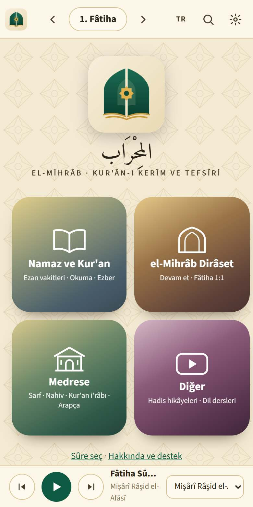
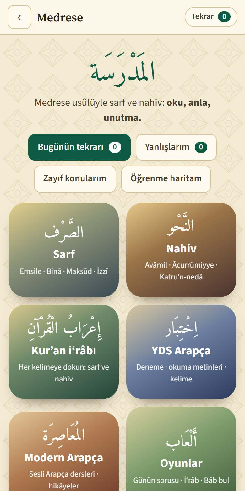
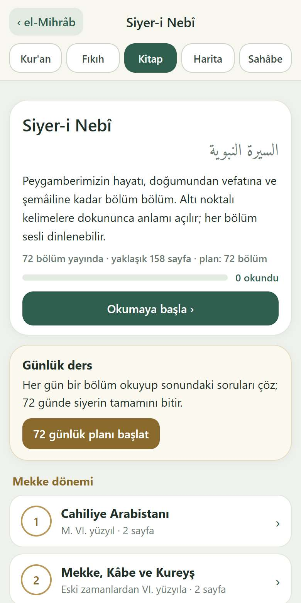
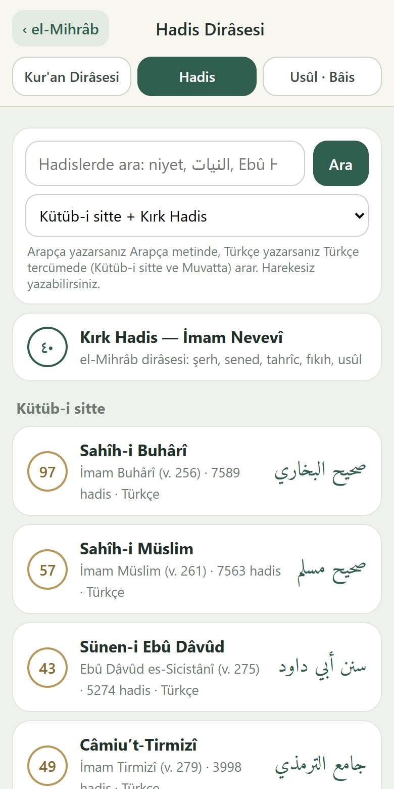
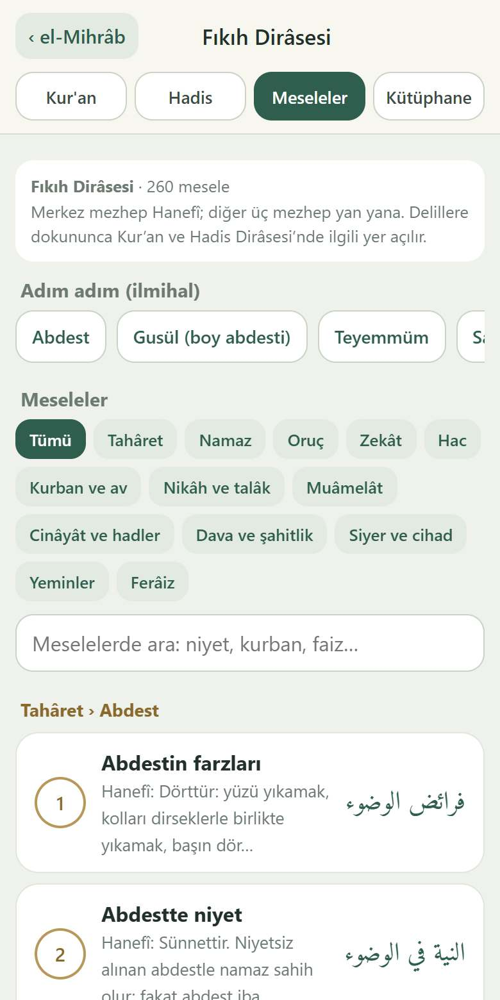
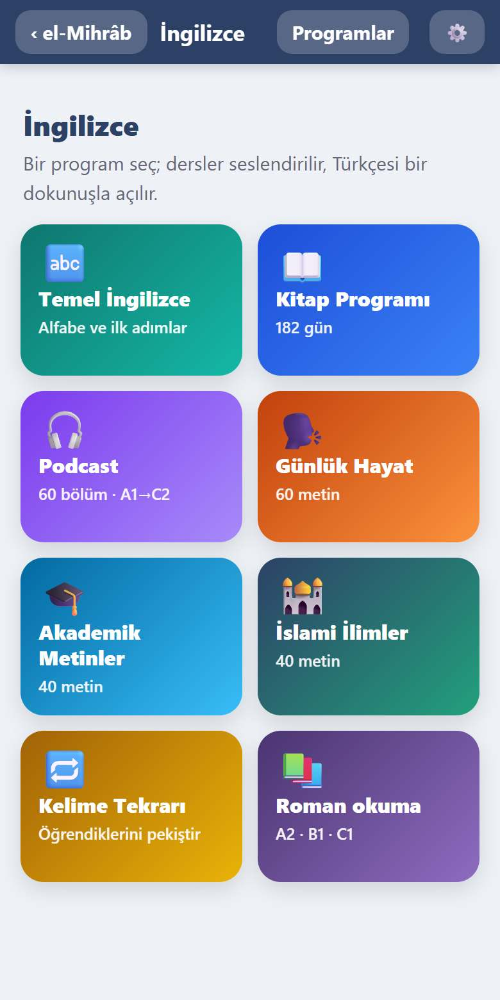

المِحْرَاب
Kur'ân-ı Kerîm, tefsîr ve medrese ilimleri tek yerde
Kur'an'ı meâl ve tefsiriyle oku, dinle; namaz vakitlerini takip et; sarf ve nahvi medrese usûlüyle öğren; hadis, siyer, fıkıh ve yabancı dil derslerine aynı uygulamadan ulaş.
Neler var?
Her bölüm doğrudan açılır; birine dokun, uygulama o bölümle başlasın.
Kur'an ve Tefsir
Mushaf, meâller, tefsir, i'râb, belâgat, kıraat ve nüzûl; sesli dinleme ve ezber.
Namaz vakitleri
Bulunduğun yere göre ezan vakitleri ve günlük okuma.
Medrese
Emsile, Binâ, Maksûd, İzzî, Avâmil, Ecurrûmiyye, Katru'n-nedâ; Kur'an i'râbı, YDS Arapça ve oyunlar.
Hadis
Kütüb-i Sitte ve diğer kaynaklarda arama, Erbaîn ve hadis hikâyeleri.
Siyer-i Nebî
72 bölümlük siyer kitabı, harita, sahâbe kartları ve günlük ders planı.
Fıkıh
Kudûrî ibareleriyle yüzlerce mesele, bab bab düzenli.
Ahlak
Riyâzü's-Sâlihîn düzeninde konular ve günlük muhasebe.
Dil dersleri
Arapça, Farsça, İngilizce, Almanca, Fransızca, İspanyolca; sesli ve Türkçe açıklamalı.
Ekran görüntüleri
Telefonda böyle görünür; bilgisayarda da aynı içerik geniş ekrana yerleşir.






Hemen başla
Tarayıcıda aç; telefonda Chrome menüsünden “Ana ekrana ekle” dersen uygulama gibi açılır.